首先感谢光华管理学院，感谢姜国华教授和我们共同开设这样一门以讲授价值投资理念为主的课程。价值投资课在这个时候开我认为非常有意义。这样的课程在国内据我所知是第一门也是唯一一门。这个课程在全球也不多，据我所知只有哥伦比亚大学有这样一门课，大概在八九十年前由巴菲特的老师本杰明·格雷厄姆最早开设。喜马拉雅资本很荣幸支持这一课程。
我今天在这里主要想跟各位同学探讨四个问题：
首先，选这门课的同学们估计将来很多人都会进入金融服务和资产管理行业，所以我想先谈谈这个行业的基本特点，以及这个行业对从业人员的道德底线要求；
第二，作为资产管理行业，我们需要知道，从长期来看，哪些金融资产可以让财富持续、有效、安全、可靠地增长？
第三，有没有办法可以有效地、通过努力让你成为优秀的投资人，真正地为客户提供实在的服务，保护客户的财产，让他们的财富能够持续地增加？什么是投资的大道、正道？
第四，那些在成熟的发达国家里已经被证明行之有效的金融资产投资方法对中国适不适合？中国是不是特殊？是不是另类？价值投资在中国是否适用？
这些都是我思考了几十年的问题，今天在此跟大家交流讨论。
资产管理是一个服务性行业，它和其他服务业相比有什么特点？有哪些地方和其他的服务行业不一样？我认为有两点不一样。
第一点，这个行业里的用户在绝大多数时间里，不知道、无法判断产品的好坏。这和其他几乎所有的行业都不太一样。比如一辆车，用户就可以告诉你，这辆车是好，还是不好；去吃饭，吃完饭就会知道这个餐馆的饭怎么样，服务如何；你去住一个酒店、买一件衣服……几乎所有的行业，判定产品好坏很大程度上是通过客户的使用体验。但是绝大多数时候，资产管理行业的绝大部分消费者其实没有办法判断某个产品到底好还是不好，也没有办法判断得到的服务是优秀的还是劣质的。
不光是消费者、投资人，即使从业人员自己——包括今天在座有很多业界的顶级大佬——去判断资产管理业另外一个产品、另外一个服务的质量水平也很难，这是金融行业尤其是资产管理行业，与其他几乎所有服务性行业完全不同的地方。你给我一份业绩，如果只有一年两年的业绩，我完全没有办法判断这个基金经理到底是不是优秀。（即便给我）5年、10年的业绩也没法判断。必须要看他投资的东西是什么，而且在相当长的时间以后才能做出判断。正是因为没有办法判断（产品和服务的优劣），所以绝大部分理论都和屁股决定脑袋有关。
另外一个最主要的特点是，这个行业总体来说报酬高于其他几乎所有行业，也常常脱离对客户财富增长的贡献，实际上真正为客户提供的服务非常有限，产品很多时候只是为从业人员自己提供了很高的回报。其定价结构基本上反映了这个行业从业人员的利益，几乎很少反映客户的利益。一般的行业总是希望能够把自己的服务质量提高到很高的水平，让消费者看得很清楚，并在这个基础上不断溢价。但是资产管理这个行业无论好还是不好，大家的收费方法都是一样的，定价基本上是以净资产的比例计算。不管你是不是真正为客户赚到了钱，结果无论怎样你都会收一笔钱。特别是私募，收费的比例更高，高到离谱。你赚钱时收钱，亏钱的时候也要收钱。虽然客户可以去买被动型的指数基金，但即便你（基金经理）的业绩比指数基金差很多，你一样可以收很多的钱，这其实就很不合理。
大家想进入到这样一个行业，我想一方面是对知识的挑战，另一方面是因为这个行业的报酬。这个行业的报酬确实很高，但是这些从业人员是不是值那么高的报酬是个很大的问题。
这两个特点加在一起就造成了这个行业一些很明显的弊病。例如，这个行业的从业人员参差不齐、鱼目混珠、滥竽充数，行业标准混乱不清，到处充斥着似是而非的说法和误导用户的谬论。有些哪怕是从业人员自己也弄不清楚。
这些特点，对所有从事这个行业的人提出了一些最根本性的职业道德要求。
我今天先谈这个问题，是因为很多在座的同学将来会成为这个行业的从业者，而这门课程的终极目标也是希望为中国的资产管理行业培养未来的领袖人才。因此，希望你们进入这个行业时首先谨记两条牢不可破的道德底线：
第一，把对真知、智慧的追求当作是自己的道德责任，要有意识地杜绝一切屁股决定脑袋的理论。一旦进入职场你就会发现几乎所有的理论都跟屁股和脑袋的关系紧密相连，如果你思考得不深，你很快就把自己的利益当作客户的利益。这是人的本性，谁也阻挡不了。因为这个行业很复杂，这个行业里似是而非的观点很多，这个行业也不是一个精确的科学，而是包含好多判断。所以我希望所有致力于进入这个行业的年轻人都能够培养起这样一个道德底线，就是把不断地追求知识、追求真理、追求智慧作为自己的道德责任。作为一个行业的明白人，不会有意地去散布那些对自己有利、而对客户不利的理论，也不会被其他那些似是而非的理论所蛊惑。这点非常非常重要。
第二，要真正建立起受托人责任（Fiduciary Duty）的意识。什么是受托人责任？客户给你的每一分钱，你都把它看作是自己的父母辛勤劳动、勤俭节省、积攒了一辈子、交到你手上去打理的钱。钱虽然不多，但是汇聚了这一家人一生的辛苦节俭所得。如果把客户的每一分钱都当作自己的父母节俭一生省下来让你打理的钱，你就开始能够理解什么叫受托人责任。
受托人责任这个概念，我认为多多少少有些先天的基因在里面。我所了解的人里或者有这个基因，或者没有这个基因。在座各位无论是从事这个行业还是将来要把自己的钱托付给这个行业，一定要看自己有没有这种基因或者去寻找有这种基因的人来管你的钱。没有这种基因的人，以后无论用什么方式，基本上都没有办法让他有。如果你的钱交到这些人手里，那真是巨大的悲剧。所以如果你想进入这个行业，最基本的，先考验一下自己，到底有没有这个基因？有没有这种责任感？如果没有的话，我劝大家一定不要进入这个行业。因为你进入这个行业一定会成为无数家庭财富的破坏者、终结者。08年、09年的经济危机很大意义上就是因为这样一些不具备受托人责任的人长期的所谓成功的行为最后导致的，这样的成功是对整个社会的破坏。
这是我给大家提的关于进入这个行业最基本的两个道德底线。
下面我们来回答第二个问题，从长期看，哪些金融资产真正地能够为客户、为投资人实实在在地提供长期可靠的财富回报？我们刚经历了股灾，很多人觉得现金是最可靠的，甚至很多人觉得黄金也是很可靠的。我们有没有办法衡量过去这些资产的长期表现到底是什么样的？那么长期指的是多长时间呢？在我看来就是越长越好。我们能够找到的数据，时间越久越好，最好是长期、持续的数据。因为只有这样的数据才能真正有说服力。在现代社会里，西方发达地区是现代经济最早的发源地，现代市场也成熟得最早。它的市场数据最大，它的经济体也最大，所以最能说明问题。这里我们选用美国的数据，因为它的时间比较长，可以把数据追溯到200年前。下面我们来看一下美国的表现。
宾州大学沃顿商学院的西格尔教授（Jeremy Siegel）在过去几十年里兢兢业业、认真地收集了美国在过去几百年里各个大类金融资产的表现，把它绘制成图表，给了我们非常可靠的数据来检验。这些数据可以可靠地回溯到1802年，今天我们就来看一下，在过去200多年的时间里，各类资产表现如何呢？（见图7）
第一大类资产是现金。最近股市的上下波动，让中国很多老百姓更加意识到现金的重要性，可能很多人认为现金应该是最保值的。我们看一看在过去200年里现金表现如何。如果1802年你有1块美金，今天这1块美金值多少钱？它的购买力是多少？从图1可以看到，答案是5分钱。200多年之后1块钱现金丢掉了95%的价值、购买力！原因我们大家都可以猜到，这是因为通货膨胀。下面我们再来看一下其他类的金融资产。
对传统中国人来说，黄金、白银、重金属也是一个非常好的保值的方式。西方发达国家在相当长的一段时间里一直实行金本位。黄金的价格确实增长了，但进入20世纪我们看到它的价格开始不断在下降。我们来看一看黄金作为贵重金属里最重要的代表在过去200年的表现。在200年前用一块美金购买的黄金，今天能有多少购买力？我们看到的结果是3.12美金。这显然确实是保值了，但是如果说在200年里升值了三四倍，这个结果也是很出乎大家预料的，并没有取得太大增值。
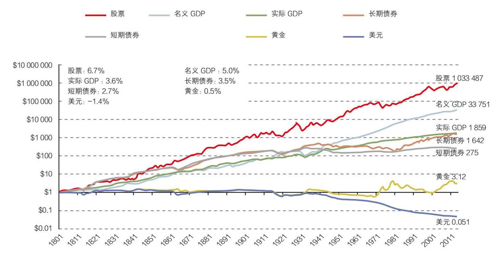
我们再来看短期政府债券和长期债券，短期政府债券的利率相当于无风险利率，一直不太高，稍稍高过通货膨胀。短期债券200年涨了275倍；长期债券的回报率比短期债券多一些，涨了1600多倍。
接下来再看一看股票。它是另外一个大类资产。可能很多人认为股票更加有风险，更加不能保值，尤其是在经历了过去3个月股市上上下下的起伏之后，我们在短短的8个月里面同时经历了一轮大牛市和一轮大熊市，很多人对股票的风险有了更深的理解。股票在过去200年的表现如何？如果我们在1802年投资美国股市一块钱，今天它的价格是多少呢？
我们现在看到的结果是，1块钱股票，即使除掉通货膨胀因素之后，在过去200年里仍然升值了100万倍，今天它的价值是103万。它的零头都大于其他大类资产。为什么会是这样惊人的结果呢？这个结果实际上具体到每一年的增长，除去通货膨胀的影响，年化回报率只有6.7%。这就是复利的力量。爱因斯坦把复利称之为世界第八大奇迹是有道理的。
上面这些数字给我们提出了一个问题，为什么现金被大家认为最保险，反而在200年里面丢失了95%的价值，而被大家认为风险最大的资产——股票则增加了将近100万倍？100万倍是指扣除通货膨胀之后的增值。为什么现金和股票的回报表现在200年里面出现了这么巨大的差距？这是我们所有从事资产管理行业的人都必须认真思考的问题。
造成这个现象有两个原因。
一个原因是通货膨胀。通货膨胀在美国过去200年里，平均年化是1.4%左右。如果通货膨胀每年以1.4%的速度增长的话，你的购买力实际是每年在以1.4%的速度在降低。这个1.4%经过200年之后，就让1块钱变成了5分钱，丢失了95%，现金的价值几乎消失了。所以从纯粹的数学角度，我们可以很好地理解。
另外一个原因，就是经济的增长。GDP在过去200年里大约增长了33000多倍，年化大约3%多一点。如果我们能够理解经济的增长，我们就可以理解其他的现象。股票实际上是代表市场里一定规模以上的公司，GDP的增长很大意义上是由这些公司财务报表上销售额的增长来决定的。一般来说公司里有一些成本，但是属于相对固定的成本，不像销售额增长这么大。于是净利润的增长就会超过销售额的增长。当销售额以4%、5%的名义速度在增长时，净利润就会以差不多6%、7%的速度增长，公司本身创造现金的价值也就会以同样的速度增长。我们看到实际结果正是这样。股票的价值核心是利润本身的增长反映到今天的价值。过去200年股票的平均市盈率在15倍左右，那么倒过来每股现金的收益就是15的倒数，差不多是6.7%左右，体现了利润率对于市值估值的反映。因此股票价格也以6%、7%左右的速度增长，最后的结果是差不多200年里增长了100万倍。所以从数学上我们就会明白，为什么当GDP出现长期的持续增长的时候，几乎所有股票加在一起的总指数会以这样的速度来增长。
这是第一层次的结论：通货膨胀和GDP的增长是解释现金和股票表现差异的最根本原因。
下面一个更重要的问题是，为什么在美国经济里出现了200年这样长时间的、持续的、复利性的GDP增长，同时通货膨胀率也一直都存在？为什么经济几乎每年都在增长？有一些年份会有一些衰退，而有一些年份增长会多一些。但在过去200年里，我们会看到经济是在不断向上的。如果我们以年为单位，GDP几乎就是每年都在增长，真正是长期、累进、复利性的增长。如何来解释这个现象呢？这个情况在过去200年是美国独有的？还是在历史上一直是这样？显然在中国有记载的过去三、五千年的历史中，这个情况从来没有发生过。这确实是一个现代现象，甚至对中国来说一直到30年以前也没有发生过。
那么我们有没有办法去计量人类在过去几千年中GDP增长基本的形态是什么样的？有没有持续增长的现象？
要回答这个问题，我们需要另外一张图表。我们需要弄明白在人类历史上，在文明出现以后，整体的GDP、整体的消费、生产水平呈现出一个什么样的变化状态？如果我们把时间跨度加大，比如回归到采集狩猎时代、农耕时代、农业文明时代，这个时候人类整体的GDP增长是多少呢？这是一个十分有趣的问题。我手边正好有一张这样的图表。这是由斯坦福大学一位全才教授莫里斯（Ian Morris）带领一个团队在过去十几年里，通过现代科技的手段，对人类过去上万年历史里攫取和使用的能量进行了基本的计量做出来的。过去二三十年各项科技的发展，使得这项工作成为可能。在人类绝大部分的历史里面，基本的经济活动仍然是攫取能量和使用能量。它的基本计量和我们今天讲的GDP关联度非常高。那么，在过去16000年里，人类社会的基本GDP增长情况怎么样？
图8代表了斯坦福团队的学术成果，最主要的一个比较就是东方文明和西方文明。
从图8我们可以看到在过去一万多年里整个文明社会的经济表现：蓝线代表西方社会，最早是从两河流域一直到希腊、罗马，最后到西欧、美国等等；红线代表东方文明，最早是在印度河流域、中国的黄河流域，后来进入到长江流域，再后来进入到韩国、日本等等。左边是16000年以前，右边是现代。从这两个社会过去16000年的比较看，如果不采取数学手段，曲线基本一直是平的。东方社会和西方社会有一些细小的差别，如果做一下数学处理，会看到更细小的区别，但是总的来说在过去的一万多年里面，增长几乎是平的。在16000年这段相当长的时间里，在农业文明里，人类社会的发展不是说没有，但是非常缓慢，而且经常呈现出波浪式的发展，有时候会进入到高峰，但总有一个玻璃顶突破不了。于是它冲顶之后就会滑落，我们大概看到了三四次这样的冲顶，然后一直在一个比较窄的波段里面上下浮动。但是到了近代以后，我们看到在过去的300年间，突然之间人类文明呈现出一个完全不同的状态，出现一个巨幅的增长，大家可以看到这几乎就是一个冰球棍一样，1块钱变成100万这样的一个增长。
如果我们截取图8其中一段再放大，把这二三百年的时间拉得更长一点，你就会发现这个图其实和图7非常地相像（见图9）。200年里的GDP和200年里的股票表现也非常非常地相像。如果你再把它缩短，最后的结果是，你会发现它几乎是直上。这个从数学上讲，当然是复利的魔力。但是也就是说，这种一个经济能够长期持续以复利的方式来增长的现象，在人类16000年的记载里从来没有发生过，是非常现代的现象。
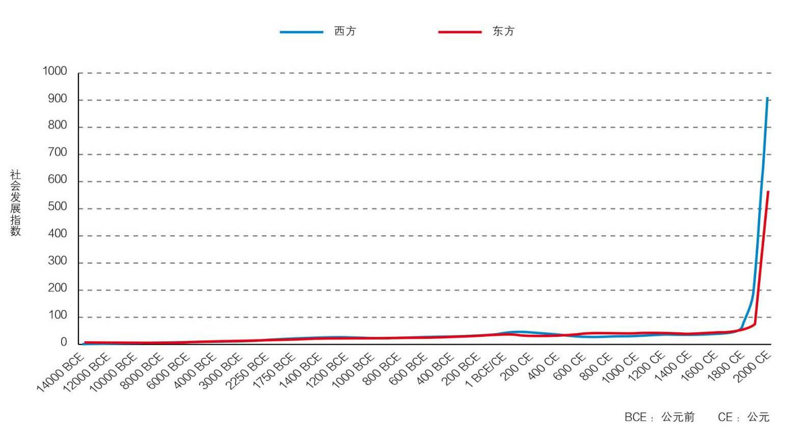
在相当长的一段历史里，人类的GDP一直是平的。中国的GDP尤其如此。从过去500年的图中可以看得更清楚，在分界点上，西方突然在这时候起来了，而东方比它晚了差不多100年。这100年东方的崛起主要是以日本为代表。
要想理解股票在过去200年的表现以及今后20年的表现，必须看懂并能够解释这条线——过去人类文明的基本图谱。不理解这个，很难在每次股灾的时候保持理性。每次到2008、2009年这样的危机的时候都会觉得世界末日到了。投资最核心的是对未来的预测，正如一句著名的笑话所言，“预测很难，尤其是关于未来”。为什么（人类文明在过去200年的经济表现）会是这样？不理解这个问题的确很难做预测。关于这个问题，我思考了差不多30多年。我把我长期的思考整理成了一个长篇的论文（本书上篇），大家如果对这个问题有兴趣可以参考。
我把人类文明分断成三大部分。第一部分是最早的狩猎时代，始于15万年以前真正意义上的人类出现以后，我叫它1.0文明。人类文明在相当长的时间里基本和其他的动物差别不是太大，其巨大的变化发生在公元前9000年左右，农业和畜牧业最早在两河流域出现的时候，同样的变化在五六千年前从中国的黄河流域开始出现，带来人类文明第二次伟大的跃升。这时，我们创造GDP的能力已经相当强，相对于狩猎时代，我叫它2.0文明，也就是农业和畜牧业文明。这个文明状态持续了几千年，一直到1750年左右，其GDP曲线基本相对来说是平的。在此之后突然之间出现了GDP以稳定的速度每年都在增长的情况，以至于到今天我们认为GDP不增长是件很反常的事，甚至于中国目前GDP的增长从10%跌到7%也成为一件大事。GDP的持续增长是一个非常现代的现象，可是也已经在每个人的心里根深蒂固。要理解这个现象，也就是现代化，我就姑且把它称之为3.0文明。
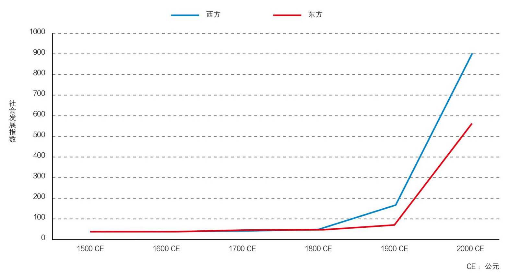
这样的划分，能够让我们更加清楚地理解3.0文明的本质是什么。整个经济出现了持续性的、累进性的、长期复利性的增长和发展，这是3.0文明最大的特点。出现了现代金融产品的可投资价值，这时才有可能讨论资产配置、股票和现金。没有这个前提的时候，这些讨论都没有意义。因此要想了解投资、了解财富增长，一定要明白财富创造的根源在哪里。最主要的根源就是人类文明在过去200年里GDP持续累进性的增长。那么3.0文明的本质是什么呢？就是在这个时期，由于种种的原因，出现了现代科技和自由市场经济，这两者的结合形成了我们看到的3.0文明。
在本书上篇中，我详细地讲述了人类文明在过去一万多年里演化的过程，并用两个公式来理解自由市场经济，1+1>2和1+1>4。到了近代，文明演化最根本的变化是出现了自由交换。在亚当·斯密和李嘉图的分析下，经济上的自由交换实际上就是1+1>2。当社会进行分工的时候，两个人、两个经济个体进行自由交换创造出来的价值比原来各自所能够创造的价值要多很多，出现了附加价值。于是参加交换的人越多，创造的附加价值就越高。这种交换在农业时代也有，但是现代科技出现以后，这种自由交换加倍地产生了更多的附加价值。原因就是知识也在互相地交换，不仅仅是产品、商品和服务。知识在交换里产生的价值更多。按照我的讲法，这就是1+1>4，指两个人在互相讨论的时候，不仅彼此获得了对方的思想，保留自己的思想，还会碰撞出一些新的火花。知识的自由分享，不需要交换，不需要大米换奶牛，结合在一起就开始出现了复利式巨大的交换增量的增长。每次交换都产生这么大的增量，社会才会迅速创造出巨大的财富来。
那么当这样一个持续的、个体之间的交换可以放大几十亿倍的时候，就形成了现代的自由市场经济，也就是3.0文明。只有在这样一个交换的背景下，才会出现经济整体不断地、持续地增长。这样的经济制度才能够把人的活力、真正的动力全部发挥出来。这在人类制度的创造历史上，大概是最伟大的制度创造。只有在这种制度出现了之后，才出现了我们讲的这种独特的现象，即经济的持续发展。对这个问题有兴趣的同学可以去参考我的论文，今天在这我就不多讲了。（我想说明的是：）经济持续的增长的表现方式就是持续的GDP增长。
通货膨胀实际上就是一个货币现象，当货币发行总量超过经济体中商品和服务的总量的时候，价格就会往上增长。为什么增长呢？当然因为经济不断增长，就需要不断地投资。在现代经济里，这要通过银行来实施。银行要想收集社会上的闲散资金，需要付出储蓄利率。这个储蓄利率必须是正的，使得它的放贷利率也必须是正数。这样整个经济里的钱要想去增长，就要提前增量；要想实现实体经济增长，就要提前投资。这个时间差，就使得通货膨胀成为一个几乎和GDP持续增长伴生的现象。你首先要投资，这些投资变成存货、半成品，然后再变成成品。在这个过程中，你需要先把钱放进去。所以你先放的这笔钱，实际上已经超过了当时这个经济里货物、服务的总量。于是这个时间差就造成了通货膨胀和GDP持续增长伴生的现象。这两个现象从数学上就直接解释了为什么现金和股票在长期里产生了这样巨大的差别。你要明白其然，就要明白其所以然。要明白为什么是这个样子。
如果是这样的话，对个人投资者来说，比较好的办法是去投资股票，尽量避免现金。但这里面很大的一个问题就是，股票市场一直在上下波动，而且在短期我们需要资产的时候，它变化的量通常很大，时间也通常会很长。
从表1我们可以看到，美国股市过去200年平均回报率差不多是6.6%，每六十几年的回报率也差不多是这个数字，相对来说，比较稳定。可是当我们把时间放得更短一些的时候，你就会发现它的表现很不一样。例如战后从1946年到1965年，美国股市的平均回报率是10%，比长期回报率要高很多。可是在接下来的15年里，1966—1981年，不仅没有增长，而且连续15年价值都在跌。在接下来的16年里，1982—1999年，又以更高的速度，13.6%的速度在增长。可是接下来的13年，又开始进入一个持续的下跌的过程。整个13年的时间里，价值是在下跌的。所以才有凯恩斯著名的一句话：“长期来看，我们都死了（In the long run we are all dead）。”毕竟每一个人投资的时间是有限的。绝大部分投资人有公开记录的时间也就是十几、二十年。可是如果赶上1981年，或者2001、2002年，十几年的收入都是负的。所以作为投资人，如果看股票这样长期的表现，那投资股指就可以了。可具体到对个人有意义的时间段，会发现可能连续十几年的时间里面股票回报都是负数。而在其他时间段里你会觉得自己是天才，什么都没做每年就有14%的回报。如果你不知道这个回报是怎么取得的，就无法判断你的投资是靠运气还是靠能力。
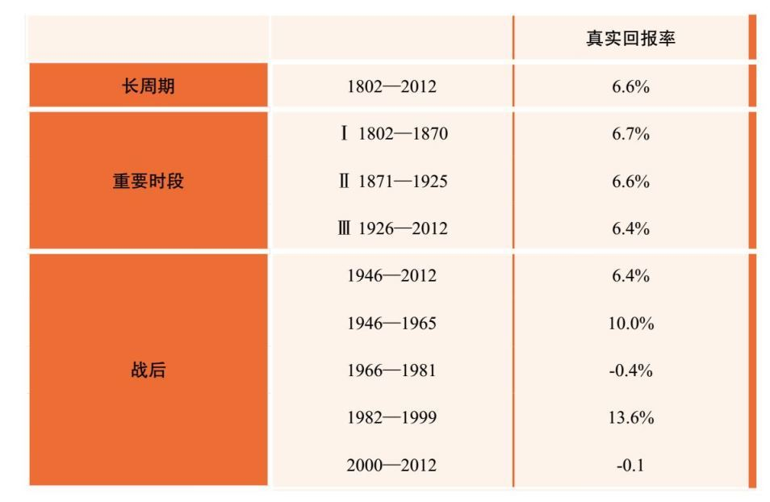
假设我们投资的时间周期就只是十几年，在这十几年里你真的很难保证你的投资一定会得到可观的回报。这是一个问题。同时股市的波动在不同的时间里也非常强烈。所以，我们下面的问题就是，有没有一种比投资指数更好的方法，更能可靠地在不同的年份里面，在我们大家需要钱的年份里面，仍然能以超越指数的回报的方法可靠地保障客户的财产？能够让客户财产仍然参与到经济复利增长里，获得长期、可靠、优秀的回报？有没有这样一种投资方法，不是旁门左道，可以不断被重复、学习，可以长期给我们带来这样的结果？这是我们下面要回答的问题。
在过去这几十年里，在我所了解的范围内，投资领域各种各样的做法都有。就我能够观察到的，能够用数据统计来说话的，真正能够在长时间里面可靠、安全地给投资者带来优秀长期回报的投资理念、投资方法、投资人群只有一个，就是价值投资。如果我必须要用长期的业绩来说明，我发现真正能够有长期业绩的人少之又少。而所有真正获得长期业绩的人几乎都是这样的投资人。
今天市场上最大的对冲基金主要做的是债券，有十几年很好的收益。可是在过去十几年里面无风险长期债券回报率从6%、7%、8%到几乎是零，如果配备2到3倍的杠杆就是10%，如果配备5到6倍的杠杆差不多13%左右，这样的业绩表现是因为运气还是能力很难判定，哪怕有十几年的业绩。而能够获得长期业绩的价值投资人几乎在各个时代都有。在当代，巴菲特的业绩是57年，其他还有一些大概在二三十年左右。这些人清一色都是价值投资者。
我如果是各位，一定要弄清楚什么是价值投资，了解他们怎么取得这些成绩。多年前，我听的第一门关于投资的课就是巴菲特的课，那时候听课的人和今天这里一样少，巴菲特第一次到哥大演讲，我那天误打误撞坐在那儿。我想弄清楚价值投资到底是什么东西，为什么这么多人能够在这么艰苦的环境里面取得这么优异的成绩，而且是持续的。
那么什么是价值投资呢？价值投资最早是由本杰明·格雷汉姆在八九十年前最先形成的一套体系。在价值投资中，今天重要的领军人物、代表人物当然就是我们熟知的巴菲特先生了。但是它包含哪些理念呢？其实很简单。价值投资的理念只有四个。大家记住，只有四个。前三个都是巴菲特的老师本杰明·格雷厄姆的概念，最后一个是巴菲特自己的独特贡献。
第一，股票不仅仅是可以买卖的证券，实际上代表的是对公司所有权的证书，是对公司的部分所有权。这是第一个重要的概念。这个概念为什么重要呢？投资股票实际上是投资一个公司，公司随着GDP的增长，在市场经济持续增长的时候，价值本身会被不断地创造。那么在创造价值的过程中，作为部分所有者，我们持有部分的价值也会随着公司价值的增长而增长。如果我们以股东形式投资，支持了这个公司，那么我们在公司价值增长的过程中分得我们应得的利益，这条道是可持续的。什么叫正道，什么叫邪道？正道就是你得到的东西是你应得的，所以这样的投资是一条大道，是一条正道。可愿意这样理解股票的人少之又少。
第二，理解市场是什么。股票一方面是部分所有权，另一方面它确确实实也是一个可以交换的证券，可以随时买卖。这个市场里永远都有人在叫价。那么怎么来理解这个现象呢？在价值投资人看来，市场的存在只是为你而服务的。能够给你提供机会，让你去购买所有权，也会给你个机会，在你很多年之后需要钱的时候，能够把它出让，变成现金。所以市场的存在是为你而服务的。这个市场从来都不能告诉你，真正的价值是什么。它只能告诉你的只是价格是什么，你不能把市场当作你的老师，你只能把它当作一个可以利用的工具。这是第二个非常重要的观念。但这个观念又和几乎95%以上市场参与者的理解正好相反。
第三，投资的本质是对未来进行预测，而预测得到的结果不可能百分之百准确，只能是从零到接近一百。那么当我们做判断的时候，就必须要预留很大的空间，叫安全边际。因为你没有办法分辨，所以无论你多有把握的事情都要牢记安全边际，你的买入价格一定要大大低于公司的内在价值。这个概念是价值投资里第三个最重要的观念。因为有第一个概念，股票实际上是公司的一部分，公司本身是有价值的，有内在的价值，而市场本身的存在是为你来服务的，所以你可以等着当市场价格远远低于内在价值的时候再去购买。当这个价格远远超出它的价值时就可以卖出。这样一来如果对未来的预测是错误的，我至少不会亏很多钱；常常即使你的预测是正确的，比如说你有80%、90%的把握，但因为不可能达到100%，当那10%、20%的可能性出现的时候，这个结果仍然对你的内生价值是不利的，但这时如果你有足够的安全边际，就不会损失太多。假如你的预测是正确的，你的回报就会比别人高很多很多。你每次投资的时候都要求一个巨大的安全边际，这是投资的一种技能。
第四，巴菲特经过自己50年的实践增加了一个概念：投资人可以通过长期不懈的努力，真正建立起自己的能力圈，能够对某些公司、某些行业获得比几乎所有人更深的理解，而且能够对公司未来长期的表现，做出比所有其他人更准确的判断。在这个圈子里面就是自己的独特能力。
能力圈概念最重要的就是边界。没有边界的能力就不是真的能力。如果你有一个观点，你必须要能够告诉我这个观点不成立的条件，这时它才是一个真正的观点。如果直接告诉我就是这么一个结论，那么这个结论一定是错误的，一定经不起考验。能力圈这个概念为什么很重要？是因为“市场先生”。市场存在的目的是什么？对于市场参与者而言，市场存在的目的就是发现人性的弱点。你自己有哪些地方没有真正弄明白，你身上有什么样的心理、生理弱点，一定会在市场的某一种状态下曝露。所有在座曾经在市场里打过滚的一定知道我说这句话的含义。市场本身是所有人的组合，如果你不明白自己在做什么，这个市场一定会在某一个时刻把你打倒。这就是为什么市场里面听到的故事都是大家赚钱的故事，最后的结果其实大家都亏掉了。人们总能听到不同新人的故事，是因为老人都不存在了。这个市场本身能够发现你的逻辑，发现你身上几乎所有的问题，你只要不在能力圈里面，只要你的能力圈是没有边界的能力圈，只要你不知道自己的边界，市场一定在某一个时刻某一种形态下发现你，而且你一定会被它整得很惨。
只有在这个意义上投资才真正是有风险的，这个风险不是股票价格的上上下下，而是资本永久性地丢失，这才是真正的风险。这个风险是否存在，就取决于你有没有这个能力圈。而且这个能力圈一定要非常狭小，你要把它的边界，每一块边界，都定义得清清楚楚，只有在这个狭小的边界里面才有可能通过持续长期的努力建立起真正对未来的预测。这是巴菲特本人提出的概念。
本杰明教授的投资方法找到的都是没有长期价值、也不怎么增长的公司。而能力圈的这个概念是巴菲特本人通过实践提出的。如果真的接受这四个基本理念，你就可以以足够低的价格买入自己能力圈范围内的公司并长期持有，通过公司本身内在价值的增长以及价格对价值的回归取得长期、良好、可靠的回报。
这四个方面合起来就构成了价值投资全部的含义、最根本的理念。价值投资的理念，不仅讲起来很简单、很清晰，而且是一条大道、正道。正道就是可持续的东西。什么东西可持续？可持续的东西都具有一个共同的特点，就是你得到的东西在所有其他人看来，都是你应得的东西，这就可持续了。如果当你把自己赚钱的方法毫无保留地公布于众时，大家都觉得你是一个骗子，那这个方法肯定不可持续。如果把赚钱的方法一点一滴毫无保留告诉所有的人，大家都觉得你这个赚钱的方法真对，真好，我佩服，这就是可持续的。这就叫大道，这就叫正道。
为什么价值投资本身是一条正道、大道？因为它告诉你投资股票，其实是在投资公司的所有权。投资首先帮助公司的市值更接近真实的内在价值，对公司是有帮助的。你不仅帮助公司不断地增长自己的内在价值，而且，随着公司在3.0文明里不断增长，因为增长造成的公司内生价值的不断增长，你分得了公司价值的部分增长，同时为客户提供持续、可靠、安全的回报，你对客户提供的也是长期的东西。最后的结果帮助了经济，帮助了公司，帮助了个人，也在这个过程里面帮助了自己，这样你得到的回报是你应得的，大家也觉得你得到的是你应得的。所以这是一条大道。你不被市场的上上下下所左右，你能够清晰地判断公司的内生价值是什么，同时你对未来又怀有敬意，你知道未来预测也很不确定，所以你以足够的安全边际的方式来适当地分散风险。这样一来，你在犯错的时候不会损失很多，在正确的时候会得到更多。这样的话，你就可以持续不断地、稳定地让你的投资组合长期实现高于市场指数的、更安全的回报。
如果你是一个什么都没有的人，你首先抽2%佣金，赢的时候再拿20%，如果输的话把公司关掉，明年再开一个公司，当你把这一套作为跟大家讲的时候，大家会觉得你得到的东西是应得的吗？还是觉得监牢是你应得的呢？但你如果坚持了巴菲特的方法，在价格上预留很多安全边际，加上适当的风险分散，帮助所有的人共赢，在所有人共赢的情况下你能够收取一部分小小的费用，大家就觉得你得到的东西真是你应得的，这就走到了投资的大道、投资的正道上。
这就是价值投资全部的理念。听起来非常地简单，也非常合乎逻辑。可是现实的情况是什么样的？在真正投资过程中，这样的投资人在整个市场里所占的比例少之又少，非常少。几乎所有跟投资有关的理论都有一大堆人在跟随，但是真正的价值投资者却寥寥无几。于是投资的特点就是，大部分人不知道你做的是什么，投资的结果变成财富杀手。我们刚刚经过的这次股灾牛熊转换就是一个最好的例证。
而投资的大道上却根本没人，交通一点都不堵塞，冷冷清清。人都去哪了呢？旁门左道上车水马龙！也就是说，绝大多数人走的是小道。为什么走小道呢？因为康庄大道非常慢。听起来能走到头，但实际上很慢。价值投资从理论上看起来确实是一条一定能够通向成功的道路，但是这个道路最大的问题是太长。也许你买的时候正好市场对公司内生价值完全不看好，给的价格完全低于所谓的内生价值，但你也不知道什么时候市场能变得更加理性。而且公司本身的价值增长要靠很多很多方面，需要公司管理层上下不断地努力工作。我们在生活里也知道，一个公司的成功需要很多人，很多时间，需要不懈的努力，还需要一些运气。所以这个过程是一个很艰难的过程。
另外一个很难的地方是你对未来的判断也很难。投资的本事是对未来进行预测，真正要理解一个公司、一个行业，要能够去判断它未来5年、10年的情况。在座哪一位可以告诉我某一个公司未来5年的情况你可以判断出来？这不是一件很容易的事情。我们在决定投资之前至少要知道10年以后这个公司大概会是什么样，低迷时什么样，否则怎么判断这个公司的价值不低于这个范围？要知道这个公司未来每年产生的现金流反映到今天是多少，我们得知道未来十几年、二十几年这个公司大致的现金流。作为公司创始人，明年什么样知道吗？你说知道，这是跟客户、跟投资人讲。有的时候跟你们的员工这么讲，我们公司要做世界500强。其实你并不一定真的能够去预测10年以上公司的发展。能够这样预测的人少之又少。不确定因素太多，绝大部分行业、公司没有办法去预测那么长。但是不是完全没有？也不是。其实你真正努力之后会发现在某一些公司里，在某一些行业里，你可以看得很清楚，10年以后这个公司最差差成什么样子？有可能比这好很多。但这需要很多年不懈的努力，需要很多年刻苦的学习，才能达到这样的境界。
当你能够做出这个判断的时候，你就开始建立自己的能力圈了。这个圈开始的时候一定非常狭小，而建立这个圈子的时间很长很长。这就是为什么价值投资本身是一条漫漫长途，虽然肯定能走到头，但是绝大部分人不愿意走。它确实要花很多很多时间，即便花很多时间，了解的仍然很少。
你不会去财经频道上张口评价所有的公司，马上告诉别人股票价格应该是什么样。你如果是真正的价值投资人绝对不敢这么讲；你也不敢随便讲5000点太低了，大牛市马上要开始了，至少4000点应该抄底；不能讲这些，不敢做这些预测。如果你是一个真正的投资人，显然我们刚才说的这几条都在能力圈范围外，怎么画这个大圈也包括不了这个问题。凡是把圈画得超过自己能力的人，最终一定会在某一个市场环境下把他自己彻底毁掉。市场本身就是发现你身上弱点的一个机制。你身上但凡有一点点不明白的地方，一定会在某一个状态下被无限放大，以至于把你彻底毁了。
做这个行业最根本的要求，是一定要在知识上做彻彻底底、百分之百诚实的人。千万不能骗自己，因为自己其实最好骗，尤其在这个行业里。只要屁股坐在这儿，你就可以告诉别人假话，假话说多了连你自己都信了。但是这样的人永远不可能成为优秀的投资人，一定在某种市场状态下彻底被毁掉。这就是为什么我们行业里面几乎产生不了很多长期的优秀投资人。我们今天谈论的一些所谓明星投资人，有连续十几年20%的年回报率，可是最后一年关门的时候一下子跌了百分之几十。他在最早创建基业的时候，基金规模很小，丢钱的时候基金的规模已经很大，最终为投资者亏损的钱可能远远大于为投资者赚的钱。但是他自己赚的钱很多。如果从开头到结尾结算一下，他一分钱都不应该赚。这就是我前面说的这个行业最大的特点。
所以虽然这条路看起来是一条康庄大道，但实际上它距离成功非常遥远。很多人被这吓坏了。同时因为这个市场总是让你感觉到短期可以获利——你短期的资产确确实实可以有巨大的变化，所以这会给你幻觉，让你想象在短期里可以获得巨大利益。这样你会更倾向于希望把你的时间、精力、聪明才智放在短期的市场预测上。这就是为什么大家愿意去抄近道，不愿意走大道。而实际上几乎所有的近道都变成了旁门左道。因为几乎所有以短期交易为目的的投资行为，如果时间足够长的话，最终要么就走入了死胡同，要么就进入了沼泽地。不仅把客户的钱损失殆尽，而且连带着把自己的钱也损失了。所以我们看到长期来说，至少在美国的交易记录，几乎所有以短期交易为目的的各种各样的形形色色的所谓的战略、策略，几乎没有长期成功的记录。而那些真正长期的、优秀的投资记录中，几乎人人都是价值投资者。
短期的投资业绩常常受到整个市场运气的影响，和你个人能力无关。比如说给一个很短的时间，不要说一两年，在任何时候，一两个礼拜，都会出现一些股神。在中国过去8个月里，都不知道出现了多少股神了。好多股神却最后跳楼了。在短期永远都可以有赢家输家，但是长期的赢家就很少了。所以哪怕是1年2年，甚至于3年5年，甚至于5年10年，很好的业绩常常也不能够去判定他未来的业绩如何。例如有人会告诉我他业绩很好，就算是5年、10年，如果我看不到他实际的投资结果，我仍然没有办法判断他的成功是因为运气还是能力。这是判断价值投资的一个核心问题，是运气还是能力。
市场可以连续15年达到14%的平均累计回报。这时你根本不需要做一个天才，只要你在这个市场里，你的业绩就会非常好；可是也会有时候在市场里连续十几年，回报是负的，如果你在这个时候回报还非常优秀就又不一样了。所以如果我看不到你具体的投资内容，一般来说很难判断。但是如果我的一个投资经理可以连续15年以上都保持优异的成绩，在正确的道路上研究，一般来说基本上就成才了。这时就是能力远远大于运气，我们基本上就可以判定他的成功。也就是说，在这个行业里，要在很长时间持续不断地艰苦地工作，才有可能真正地成才，这个时间恐怕要15年以上。这就是为什么虽然这条康庄大道一定会通向成功，但交通一点都不堵塞，走的人寥寥无几。但恰恰这就是那些想走一条康庄大道、愿意走一条艰苦的道路的人的机会。这些人走下来，得到的成功确确实实在别人看来就是他应得的成功。这样的成功才是可持续的，才是真正的大道。你得到的成功真正是你付出得来的，别人认可、你也认可，所有其他人客观地看也认可。
所以我希望今天在座的同学能够下决心做这样的人，走这样的道路，取得这样应得的成功，这样你自己也心安。你不再是所有赚来的钱都是靠短期做零和游戏，不再把客户的钱变戏法一样变成自己的钱。如果你进入这个行业，不具备我开始讲的基本的两条道德价值底线，你一定会在成功的过程中为广大的老百姓提供很多摧毁财富的“机会”，一定是有罪的。我提醒那些尤其还在学校里面念书、想进入这个行业的的学生，扪心自问，你有没有受托人责任，有没有这种基因。如果没有，奉劝你千万不要进入这个行业，你进这个行业一定是对社会的损害。当然可能在损害别人的时候，自己变得很富有。但我不认为我能在这种情况下安枕无忧，日子过得舒心；虽然很多人可以。我希望你们不是（这样的人），我希望你们进入这个行业以后千万不要做这样的事。
如果你没有受托人责任的基因，又进入这个行业，最后你就跟所有人一样很快进入旁门左道，在所有的捷径里面要么一下子闯到死胡同，要么进入泥沼地，带进去的都是客户的钱。如果人不是太聪明，最后会把自己的钱都赔进去，一定是这样的结果。如果没有对于真理智慧的追求，没有把这种追求作为对自己的道德要求，如果各位没有受托人的基因，不能建立起受托人的责任，把所有客户给你的每一分钱当作你父母辛勤积攒一辈子交给你打理的钱，没有这样的精神奉劝各位不要进入这个行业。
所以我希望大家在进入这个行业之初，一定要树立这样的观念，一定要走正路。
下面我来讲一讲最后一个问题。既然价值投资是一个大道，它在中国能不能实现？
在过去几百年里，股票投资确实能在长期内给投资人带来巨大利益。我们也解释了为什么会是这样的情况。这个情况不是在人类历史上历来如此的，只是在过去300年才出现了这样特殊的情况。因为人类进入了一个新的文明阶段，我们叫现代化，我也可以叫它3.0科技文明。这是一个现代科学技术和现代自由市场相结合的文明状态。那么中国是不是一个独特的现象呢？是不是只有美国、欧洲国家才有可能产生这种现象，而中国是个特例呢？很多人在分析到很多事的时候都说中国是特殊的。我们在现实中确实也发现中国很多事情和西方、美国不一样。但是在这个问题上，就是我们今天讨论的核心——投资问题上，中国是不是特殊呢？
如果绝大部分人都在投机，价格在很多时候会严重脱离内在价值，你怎么能够判定中国未来几十年里仍然会遵循过去200年美国经济和美国股票市场所展现出来的基本态势？作为投资人，投下去之后如果周围的人都是劣币驱逐良币，价格确实有可能长期违背基本价值。如果这个长期足够长，如果我的财产不能够被保障怎么办，如果中国不再实行市场经济的基本规范怎么办？回答这个问题也非常关键。这涉及到对未来几十年的预测：中国会是什么样子呢？
我谈谈我个人的看法，价值投资在中国能不能实现这个问题确实让我个人困惑了很多年。投资中国的公司意味着投资这个国家，这个国家可能会出现1929年，也可能会出现2008年的情况。事实上今年的某些时候，很多人认为我们已经遇到了这个时刻，也可能再过几个月之后我们又碰到同样的问题，完全是有可能的。你只要做投资，只要在市场里你就永远面临这个问题。在做任何事情之前要把每一个问题都认真想清楚。这个问题是不能避免的，必须要思考的。
首先我们还是用数据来说话。我给大家看一下我们能够搜集到的过去的数据，对中国股市和其他市场的表现做一个比较。图10是美国从1991年底到去年底的数据，我们看到其表现几乎和过去200年的模式是一样的，股票的投资在不断地增加价值，而现金在不断地丢失价值，这都是因为GDP的不断增长，和过去200年基本上是一样的。
接下来我们看一看中国自1991年以来的数据。中国在1990年以后才出现老八股，1991年才出现了真正的股指。我想请大家猜一猜中国在这段时间里是什么样子呢？至少我们知道在过去的这3个月，中国股市是一片哀鸿。股票在过去是不是表现得和过去3个月一样呢？我们看看图11。
我们看到的结果是，中国在过去20年里的模式几乎和美国过去200年是一模一样的。1991年至今的大类资产中，同样的1块钱，现金变成4毛7，跟美金类似，黄金当然是一样的，上指、深指一直在增加，固定收益的结果基本也是增加。但不同的是，它的GDP发生了很大的变化。因为GDP的变化，它的股指、股票的表现更加符合GDP的表现。也就是说，比美国要高。在这样一个发展中国家，我们居然看到了这样一个特殊的表现形式。我们看到的是在过去几十年里，第一，它的基本模式和美国是一样的；第二，它基本的动力原因也是GDP的增长。由于中国的GDP增长在这个阶段高于美国，直接导致的结果是它的通货膨胀率也高，现金丢失价值的速度也快，股票增长价值的速度也快。但是基本的形式一模一样。这就很有意思了。
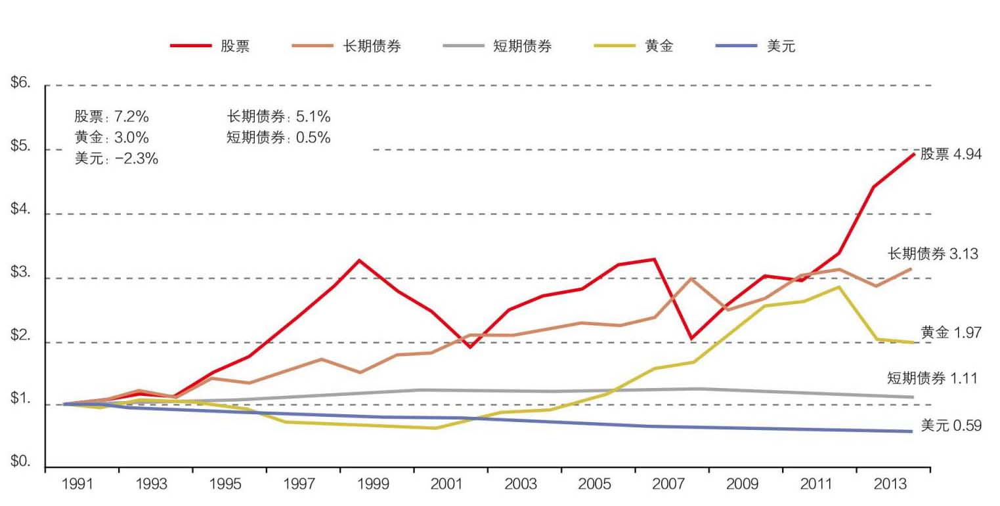
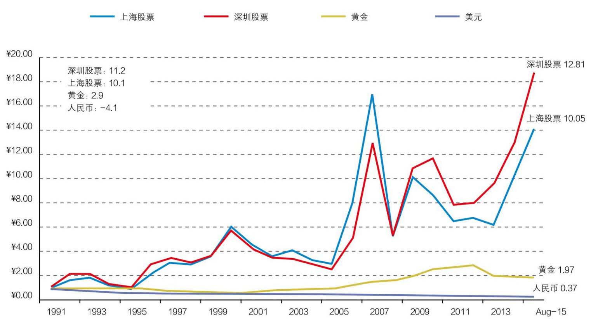
我们看到过去这二十几年里，当中国真正地开始走入3.0文明本质的时候，它的表现几乎和美国是一样的，形态也是一模一样的，虽然我们的速度要快一些。虽然上指和深指过去25年涨了15倍，年化回报率12%，但是我相信所有的股民，包括在座的各位，没有一个得到这个结果的。因为没有人过去在股票上的投资涨了15倍。但有一家从股市成立第一天开始就得到这个回报，她就是中国政府。中国政府从第一天就得到这个回报。大家担心中国的债务比例比较大，但是大家常常忘掉中国政府还拥有这个回报，她在几乎所有的股份里面都占据大头。其他炒股的人没有一个人得到这样的结果。一开始，没有人认为中国会有和美国几乎同样的表现，因为我们走的路不一样。但当真正回到现代化本源，3.0文明本源的时候，最后的结果实际都是一样的。
那么我们看具体的公司是不是也是这样呢？我举几个大家耳熟能详的公司看一看：万科、格力、福耀、国电、茅台，这些公司确确实实从很小的市值发展到现在这么大，最高的涨了1000多倍，最低的也涨了30倍（参见表4）。
有没有人在过去20年里投资赚了1000倍？你投资万科一家就是1000倍，这是存在的。当然真正能赚到1000倍的只有最早的国有股份原始股，因为上市第一天就涨了10倍。所以原始股现象我单列出来。第一天之后大家都可以投，如果买了仍然可以赚近百倍，伊利110多倍。这个指数并不是抽象的指数，而是实实在在地出现了这些公司，这些公司从很小的公司成长为很大的公司。
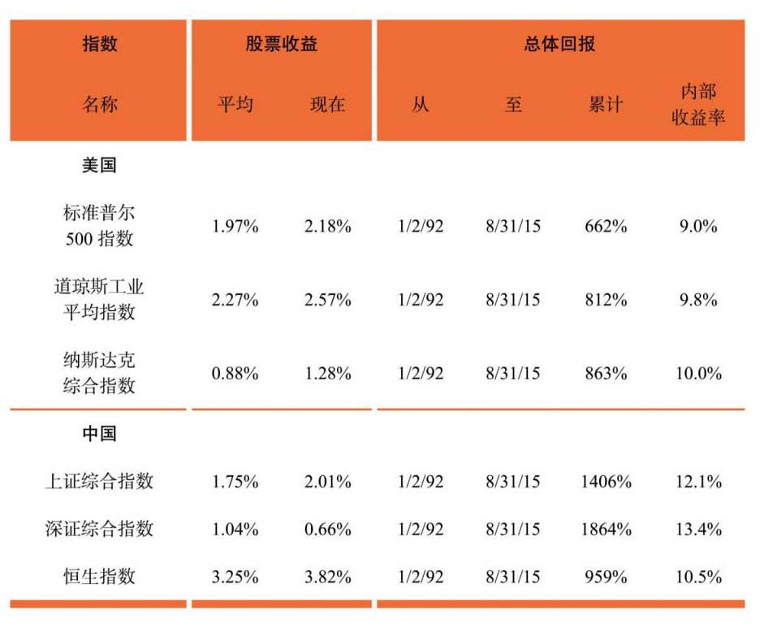
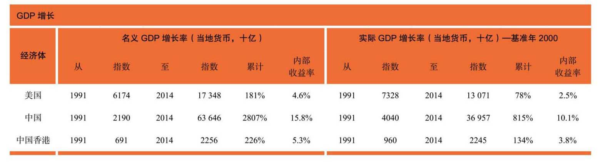
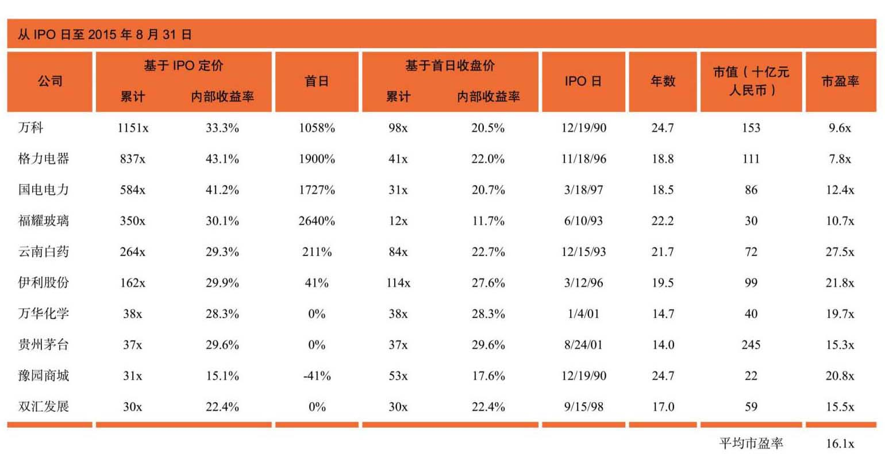
中国香港也是一样的，香港没有原始股的概念，投资腾讯实实在在可以获得186倍的回报，从第一天开始投就可以了，时间还短，上市时间是2004年，在过去10年里面增长了186倍。这些公司都有很多生意是在中国大陆的（参见表5）。海螺、光大、港交所、利丰等等，并不是只有这些公司这样，只是正好这些公司大家都比较熟悉。举这些例子是为了说明指数并不是抽象的。
同期的或者早期的美国，一些公司大家也耳熟能详，伯克希尔从1958年上市到现在涨了26000多倍，IRR（内部收益率）都是相当的。在美国上市的百度、携程等，这些IRR最高的好几个都是中国公司（参见表6）。
今天不谈个股，我只是想说明这个现象是存在的。股指不是一个抽象的东西，股指是由具体的一家家公司组成的。确确实实在过去200年我们走了好多不同的路，但是当我们选择3.0文明正道的时候会发现，中国表现出来的结果确实和其他3.0文明国家几乎是一样的。
这个现象怎么解释呢？我们怎么理解过去这几十年的表现呢？更重要的一个问题是在下面这几十年里，中国股市会不会出现同样的现象？会不会出现新一轮这样的一些公司？也可能是同样的公司，可能是不同的公司，但是同样会给你带来几百倍上千倍的回报。这种可能性存在吗？这是今天我们要回答的最后一个问题。
要回答中国是不是独特，我们要纵观整个中国现代化的历程。中国现代化是在1840年以后开始的，她是被现代化，而不是主动的现代化。如果中国按照自己的内生发展逻辑不会走到这一步。最主要的一点原因是，中国的政府力量非常强大，在这样的情况下不可能产生所谓的自由市场经济。中国历史上市场经济萌芽了好几次，但是没有一次形成真正自由的市场经济。中国政府从汉代以后一直是全世界最稳定、最大、最有力量、最有深度的政府。这跟我们的地理环境有关系，今天我不细谈这个问题。实际的情况是，在过去2000年里这个国家非常强大，非常稳定，所以所谓的3.0文明不可能在这里诞生。但是不能在这里诞生不等于不可能被带入。
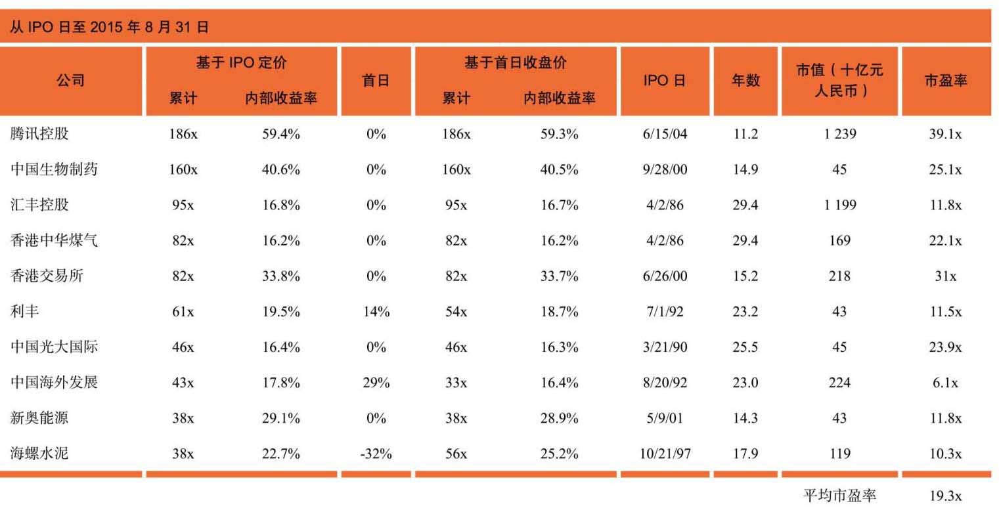
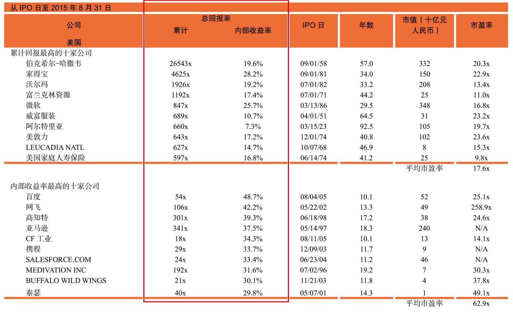
我们今天看到的现代化不是简单的制度的现代化，这是我们理解中国从1840年以后发生变化的本质。我们的变化不是文化的变化，不是经济制度的变化，我们今天遇到的变化是文明的变化，是一种文明形态的变化。
这个文明形态的变化和公元前9000年农业文明的革命是一样的类型，那时候农业文明的出现是因为偶然因素。中东地区最后一次冰川季结束，农业发展开始变得有可能了，正好两河流域出现了一些野生植物可以被食用，出现了一些野兽可以被圈养，所以出现了农业文明，一旦出现之后立刻迅速传遍世界的各个角落。今天我们看到3.0文明是自由市场经济和现代科技的结合，这两种形态的结合产生了一种新的文明状态。在过去200年3.0文明的传播过程中，我们可以看到很多和2.0文明传播很相似的地方。
3.0文明的发展像2.0文明的出现一样，几乎都是由一些地理位置上的偶发事件决定的，并没有什么绝对的必然性。因为地理位置的原因，西欧最早发现了美洲。西欧那边通过大西洋只有3000英里，我们这边通过太平洋要6000英里，而且因为洋流的原因，实际还远大于6000英里的航程。中国也没有什么动力去找美洲。欧洲发现了美洲之后就形成了环大西洋经济。环大西洋经济最大的特点是没有政府的参与。只有在这种情况下，才能出现一个没有政府参与的、完全以市场化的企业、个人为主体的这样一个全新的经济形态。这个经济形态又对我们的世界观提出了挑战，为了应对这些世界观出现了现代科学，现代科学又带来了一场理性革命，对过去古老的知识作出了新的检验，也就是启蒙运动。就是在这样的一系列的背景下，出现了所谓的3.0文明，现代科技文明。
这种情况在中国的社会体制下确实几乎不可能发生。但从2.0文明可以看到，无论从什么地方开始，一旦新的文明出现以后，就会迅速地向全球所有的人传播，旧的很快被同化，这跟人的本性有关。根据我们今天对人类共同的祖先生物性的理解，人都具有同样的本性，所有人的祖先都来源于同一个地方、同一个物种。五六万年以前人类开始从非洲大出走，用了差不多三五万年的时间从非洲最早的摇篮出走到遍布全球。人类出走经历几条不同的路线，其中一个分支进入亚洲、中国，最后覆盖美洲大陆。因此，人的本性分布是一样的，聪明才智、进取心、公益心等特征的分布也是差不多的。人类就本性而言情感上追求结果平等，理性上追求机会平等。追求结果平等的本性使得每一种新的更先进的文明状态出现后能够在较短时间内迅速传播到世界的每一个角落，接受机会平等的机制就使得每个社会都有自己的文化精神，能够创造出一套制度，能够慢慢地在这个演变的过程中渗透到每个角落。整个过程其实蛮痛苦的，从不平等到平等。
所以文明的传播早晚会发生。原来文明程度、文化程度比较高的地方传播的速度会快一些；没有经过殖民、或经过部分殖民的地方传播速度也会快一些；这就是为什么日本会成为亚洲第一，是因为它没有经过殖民时代；中国次之；印度因为曾经是一个全殖民的社会，所以要慢一些。
这些细节我们就不谈了。总的来说，中国是从大概1840年之后就一直在走现代化探索之路，但一直没有完全明白现代化本质究竟是什么。我们在1840年以后几乎尝试了所有各种各样的方式。最早我们从自强运动开始，当时的想法是只要学习洋人的科技就可以了，其他跟原来都是一样的。后来发现不奏效，不成功，当然其中有太平天国运动，我们跟日本对抗了50年左右等等。日本走的路我们没有走，很大原因是我们认为必须跟它倒着来因素的影响。1949年之后，前30年走的又是另外一条路，实行的是集体经济，是完全的计划经济体制。我们几乎把其他可以试的方式都试了一遍。从70年代末开始，我们尝试的道路终于进入了3.0文明的本质——自由市场经济结合现代科技。在此之前走了150年，到最后发现全都不成功，就这最近35年试了两个东西，一个是自由市场经济，一个是现代科技。政治制度没有很大变化，文化也没有很大变化。但最近这35年，我们发现整个中国所有的经济形态突然之间和其他的3.0文明表现出惊人的一致。
也就是说中国真正进入到3.0文明核心就是在过去35年的时间里。在此之前的现代化进程走了150年，我们的路走得比较曲折，有各种各样的原因，就是一直没有走到核心的状态去。
直到35年前，我们才真正进入了3.0文明的核心，也就是自由市场经济和现代的科学技术。一旦走上了这条道路之后，我们就发现中国经济表现出和其他3.0文明经济非常惊人的相似性。就是我们刚才在这个图表里看到的，股票市场、大宗金融产品过去二三十年的表现，包括个股、公司表现都很惊人。当中国开始和3.0文明相契合的时候，它表现出来的方式和其他的3.0文明几乎是一样的。所以在这一点上，中国的特殊性并没有表现在3.0文明的本质上，中国的特殊性表现在它的文化不同，它的政治制度安排也有所不同。但是这些在我们看来都不是3.0文明的本质。
那么，中国有没有可能背离3.0文明这条主航道？因为中国政治制度的不同，很多人，包括国内、国外的投资人都有这样一个很深的疑虑，就是在这样的一个政治体制下，我们现代化的道路毕竟走了将近200年，我们毕竟选择走过很多其他的路，我们有没有可能走回头路？
我们知道，中国在1949年以后，前30年走的是一个集体化的道路，能够这样走也是因为这样的政治体制。那么在今天的情况下，我们还有没有可能再次走回头路、抛弃市场经济呢？我认为这是一个投资人必须要想清楚的问题，否则很难去预测未来3.0文明在中国的前景，也就很难预测价值投资在中国的前景。不回答这个问题，想不清楚，心里不确定，市场的存在就会暴露你思维上、人性上、心理上的弱点。你只要想不清楚，你只要有错误，就一定会被淘汰。
所有这些问题都没有标准答案，都是在过去200年被一代又一代知识分子反复思考的问题。我今天讲的这个问题是我个人的思考，也是困扰我个人几十年的问题。
关于这个问题，我的看法是这样的。我们需要去研究一下3.0文明的本质和铁律是什么。我们前面已经粗浅地讲到了，3.0文明之所以会持续、长期、不断地产生累进式的经济增长，根本的原因在于自由交换产生附加价值。而加了科技文明后，这种附加价值的产生出现了加速，科技成为一个加速器。参与交换的人、个体越多，国家越多，它产生的附加价值就越大。这最早是亚当·斯密的洞见，李嘉图把这种洞见延伸到国家与国家、不同的市场之间的交换，就奠定了现代自由贸易的基础。这种理论得出的一个很自然的结论就是不同的市场之间，如果有独立的市场、有竞争，你会发现那些参与人越多、越大的市场就越有规模优势。因为有规模优势，它就会慢慢地在竞争过程中取代那些单独的交易市场。也就是说，最大的市场会成为唯一的市场。
这在2.0文明时代是不可想象的，我们讲的自由贸易就是从这个洞见开始的，没有这个洞见根本不可能有后来的自由贸易，更不要说有后来所谓全球化的过程。这个洞见从英国18、19世纪的自由贸易开始一直到1990年代初全球化第一次出现才被最后证明。全球化以后我们今天也可以有这样一个新的推论，就是现代化的铁律：当互相竞争的两个不同的系统，因为有1+1>2和1+1>4两种机制同时存在交互形成，交换的量越大，增量就越大，当一个系统一个市场的交换量比另外一个系统大的时候，它产生附加值的速度在不断增快，累进加速的过程最后导致最大的市场最后变成唯一的市场。90年代初到90年代中期，这个情况在历史上第一次出现，从此再也没有出现过第二个全球市场。这种现象在人类历史上从没有出现过。李嘉图预测两个相对独立的系统进行交换的时候，两个系统都会得利，所以自由贸易是对的。当他讲这个问题的时候也没有预料到最终所有的市场能够形成唯一的市场，最大的市场成为唯一的市场。这是在1990年代中期最后实现的。
这恰恰就是3.0文明在过去几十年基本的历史轨迹。最早开始的时候是英国和美国的环大西洋经济，他们把这种贸易推给自己的殖民地，经历了一战、二战。在二战后，形成了两个单独的循环市场，一个是以美国、西欧、日本为主的西方市场；另一个是以苏联、中国为首的，开始的时候，单独循环的另外一个市场。显然欧美的市场要更大一些，它的循环速度也更快一些，遵循的是市场经济的规则，所以就变得越来越有效率。这两个市场开始的时候应该说还是旗鼓相当，但几十年之后我们看到了美苏之间的差别，我们看到了西德和东德之间的差别，我们看到了中国大陆和香港、台湾的差别，我们今天依然可以看到韩国和朝鲜之间的差别，等等不一而足。结果就是在90年代初之后，随着柏林墙倒塌，随着中国全面拥抱市场经济，第一次出现了人类历史上一个很独特的现象叫全球化。这时候3.0文明才开始真正表现出它的本质，我把它叫做3.0文明的铁律。这就是这个理论的本质，这个铁律所预测的情况变成了现实，确确实实出现了这样一个全球的、统一的、共同的、以自由贸易、自由交换、自由市场经济为主要特征的全球经济体系。
市场本身具有规模效益，参与的人越多，交换的人越多，创造出来的价值增量也就越多，越大的市场资源分配越合理，越有效率，越富有、越成功，也就越能产生和支持更高端的科技。相互竞争的不同市场之间，最大的市场最终会成为唯一的市场，任何人、社会、企业、国家离开这个最大的市场之后就会不断落后，并最终被迫加入。
一个国家增加实力最好的方法是放弃自己的关税壁垒，加入到这个全球最大的国际自由市场体系中去；要想落后，最好的方式就是闭关锁国。通过市场机制，现代科技产品的种类无限增多，成本无限下降，与人的无限需求相结合，由此经济得以持续累进增长，这就是现代化的本质。这个现象发生之后，我们就能明白东德和西德的差别，韩国和朝鲜的差别，改革开放之前的中国大陆和中国台湾、中国香港的差别。为什么伊朗冒着风险放弃自己认为是保命的核武器项目，一定要加入到这个大的市场？因为这个大的市场是唯一的市场，像伊朗这样一个很小的闭环市场完全不足以产生真正的高科技；不要说伊朗，中国也不行；不要说中国，苏联也不行。
基本上我们现在新信息出现的速度是这样的，每过几年出现的新信息就是在此之前全部人类信息的总和。这个速度在10年前大家计算是8年，我估计这10年的变化速度还在加快。1+1>4的铁律在不断重复，速度更快。市场如果小的话一定会落后。中国已经加入WTO 15年了，在此之前市场经济也已经差不多持续了二三十年了。在这种情况下，任何经济体在单独出来之后就会形成相对比较小的市场，这个市场在运行一段时间之后必然越来越落后。中国如果改变了它的市场规则，或者离开了这个共同的市场，它就会在相对短的时间里迅速地落后。我相信像在中国这样一个成熟的、有成功的历史和文化沉淀的国家里，这种情况绝大多数人是不会接受的。中国不是没有可能短暂离开这个大的市场，但是中国不可能永远成为失败者。中国人、中国文化在经历了几千年的成功之后不愿意失败。如果中国文化、中国人在经历几千年的成功之后不愿意失败，那么任何短暂的离开、偏离3.0文明主轨的行为，很快就会被修正。
虽然这个修正从历史的长河来看非常短暂，对我们每个人的生活来说可能相对还是比较长。但是在这个长度中仍然可以有自由市场经济，仍然可以寻找到足够的安全边际。这个时间段是可以忍受的，这个时间段并不比我们十几年里面连续的市场低迷更可怕。你可以假设我们这个社会可能背离3.0文明一段时间。当你这么认为的时候，你对3.0文明铁律的理解仍然可以让你在有足够安全边际的情况下进行价值投资。
基于以上背景，我们回到投资上，来看看价值投资在中国的展望。
我认为中国今天的情况基本上是介于2.0文明和3.0现代科技文明之间，差不多2.5文明吧。我们还有很长的路要走，也已经走了很长的一段路。所以我认为未来中国会继续在3.0文明主航道上走下去应该是个大概率的事情。因为她离开的成本会非常非常高，像中国这样一个文化、一个民族，如果对她的历史比较了解的话，我认为她走这样的道路，尤其是大家已经明白了现代文明的本质后，再去走回头路的可能性是非常小的。中国离开全球共同市场的几率几乎为零。中国要改变市场经济规则几乎也是非常小概率的事件。所以，中国在未来二三十年里持续保持在全球市场里、持续进行自由市场经济和现代科学技术的情况是一个大概率事件。中国在经济上走基本的3.0文明的主航道仍然是大概率事件。我们看到真正3.0文明的主道其实和政治、文化关系不大，而和自由市场经济及现代科技关系极大，这是真正的本质。这是很多投资人，尤其是西方投资人对中国最大的误解。
只要中国继续走在3.0现代科技文明的路上，继续坚持主体自由市场经济和现代科学技术，那么它的主要大类资产的表现，股票、现金的表现大体会遵循过去300年成熟市场经济国家基本的模式，经济仍然会持续累进式的增长，连带着出现通货膨胀，股票表现仍然优于其他各大类金融资产，价值投资理念在中国与美国一样仍是投资的大道、正道，仍然可以给客户带来持续稳定的回报，更加安全、可靠的投资回报。这就是我认为价值投资可以在中国实行的最根本性的一个原因。
另外一个情况是，我认为价值投资不仅在中国可以被应用，甚至中国目前不成熟的阶段使价值投资人在中国具备更多的优势。这个原因主要是，今天中国在资本市场中所处的位置，资本市场百分之七十仍然是散户，仍然是短期交易为主，包括机构，也仍然是以短期交易为主要的目的。价格常常会大规模背离内在价值，也会产生非常独特的投资机会。如果你不被短期交易所左右、所迷惑，真正坚持长期的价值投资，那么你的竞争者会更少，成功的几率会更高。
而且中国现在正在进行的经济转型，实际上是要让金融市场扮演越来越重要的融资角色，不再以银行间接融资为主，而让股票市场、债券市场成为主要资金来源，成为配置资源的主要工具。在这种情况下，金融市场的发展规模、机构化的程度、成熟度都会在接下来的时间里得到很大的提高。当然如果把眼光只限在眼前，很多人会抱怨政府对市场的干预过多、救市不当，等等，但是我认为如果把眼光放得长远一些，中国市场仍然是在向着更加市场化、更加机构化、更加成熟化的方向去发展，在下一步经济发展中会扮演更重要的角色。真正的价值投资人应该会发挥越来越重要的作用。
所以今天我看到各位这样年轻，心里还是有一些羡慕的。我认为在你们的时代里，作为价值投资者，遇到的机会可能会比我还要多。我感觉非常幸运，能够在过去这二十几年里师从价值投资大师，能够在他们麾下学习、实践。你们的运气会更好。但我还是希望大家能永远保持初心，永远记住这两条底线：第一，要永远明白自己的受托人责任，把客户的钱当作自己的钱，当作自己父母辛苦血汗积攒了一生的保命钱。你只有这样才能真正把它管好。第二是要把获取智慧、获取知识当作是自己的道德责任，要有意识地辨别在这个市场里似是而非的理论，真正地去学到真知灼见，培养真正的洞见，通过长期艰苦的努力取得成就，为你的客户获取应得的回报，在转型期为推动中国经济发展做出自己的贡献，这样于国、于家、于个人都是一个多赢的结果。
我衷心祝愿各位能够在正道上放胆地往前走！因为这里面既无交通堵塞，风景也特别好。也不要寂寞，因为这个行业里充满了各种各样的新奇，各种各样的挑战，各种各样的风景。我相信各位在未来一定可以在这条路上走得更好。坚持努力15年，一定可以成为优秀的投资人！谢谢！